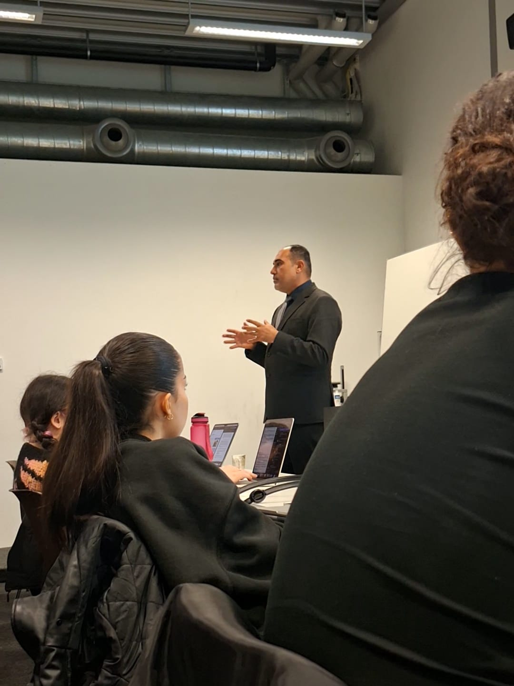
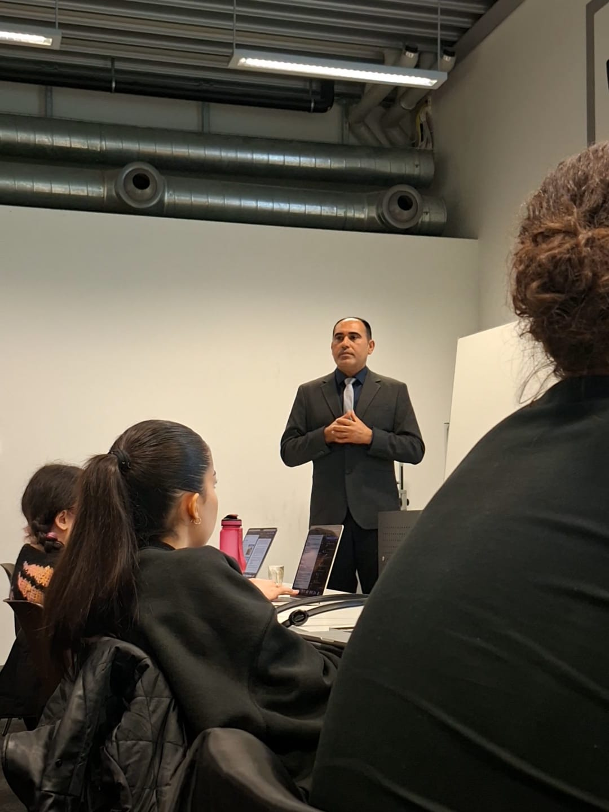
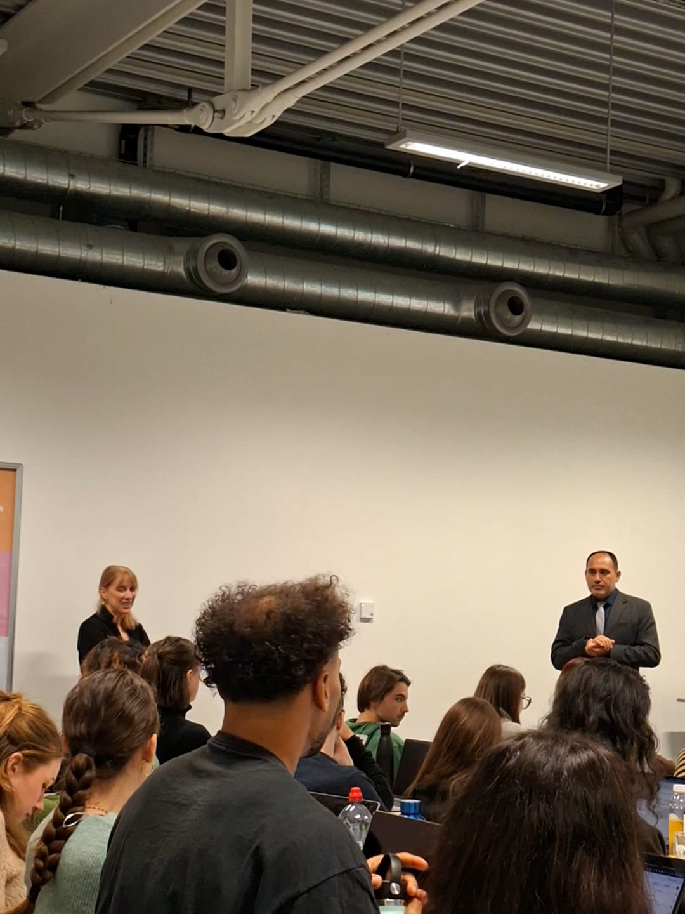
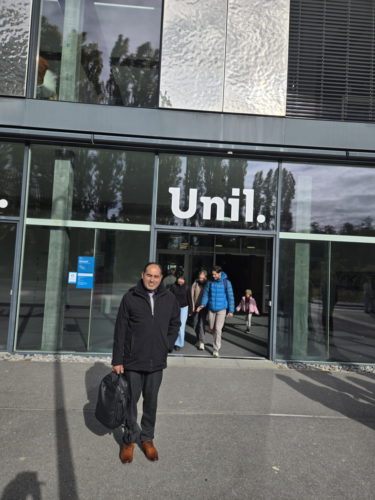

Invited Talks
Dr Mohammedwesam Amer Delivers Lecture “The Necropolitics of Scholasticide in Gaza: Education, Knowledge and the Struggle over the Future” at the University of Lausanne
Dr Mohammedwesam Amer delivered the lecture “The Necropolitics of Scholasticide in Gaza: Education, Knowledge and the Struggle over the Future,” examining the destruction of Gaza’s educational system and its implications for knowledge production, cultural memory, and Palestinian futures.
Dr Mohammedwesam Amer delivered an invited lecture at the University of Lausanne, Switzerland, titled The Necropolitics of Scholasticide in Gaza: Education, Knowledge and the Struggle over the Future. The lecture examined the devastating impact of war on Gaza's educational institutions through the analytical lenses of scholasticide and necropolitics, arguing that the destruction extends far beyond physical infrastructure to encompass intellectual communities, cultural memory, research capacity, and the conditions necessary for societal continuity. Drawing on his interdisciplinary expertise in media, communication, conflict, and political analysis, as well as his experience as a former dean at Gaza University, Dr Amer provided a rare scholarly and personal perspective on the systematic erosion of educational life in Gaza and its implications for Palestinian self-determination and future development.
The lecture explored the destruction of schools, universities, libraries, archives, and academic communities in Gaza, situating these developments within broader debates on violence, knowledge production, and human rights. Dr Amer examined how the loss of educational infrastructure affects not only access to learning but also the preservation of collective memory, intellectual leadership, and opportunities for future generations. The presentation combined empirical evidence, critical theory, and first-hand professional experience to analyse the long-term consequences of educational destruction, including displacement, interrupted learning, academic loss, and the weakening of institutional capacities. Concluding with a framework for “de-scholasticide,” Dr Amer proposed a comprehensive approach to rebuilding higher education that includes support for students and scholars, restoration of academic institutions, preservation of archives and cultural heritage, expansion of international academic solidarity, and sustained investment in Palestinian educational recovery. Through this lecture, he contributed to international discussions on education in conflict zones and highlighted the urgent need to protect knowledge, scholarship, and educational futures in contexts of war and displacement.



